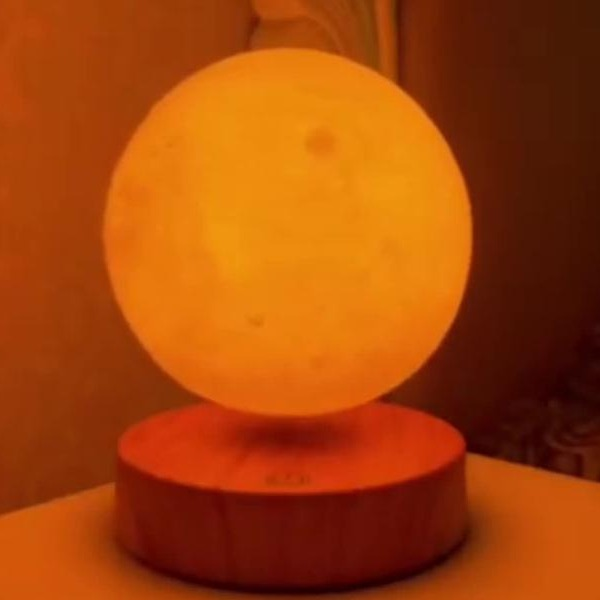
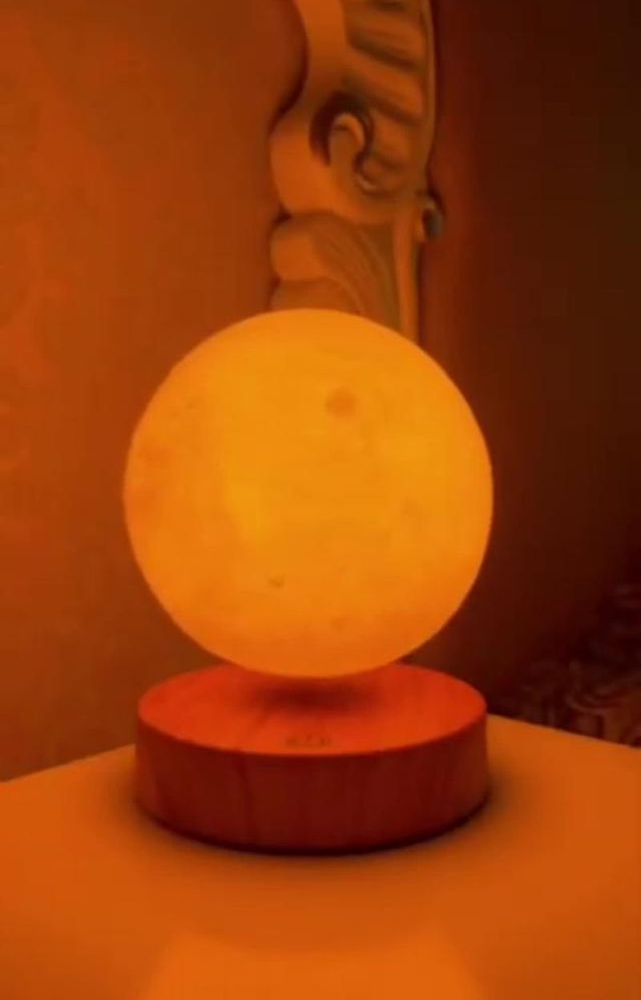
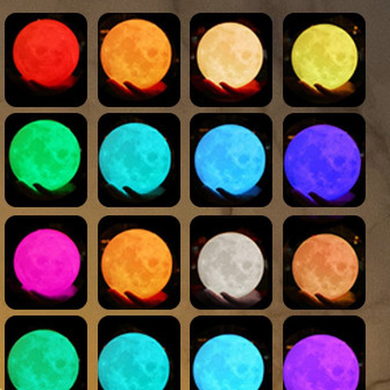
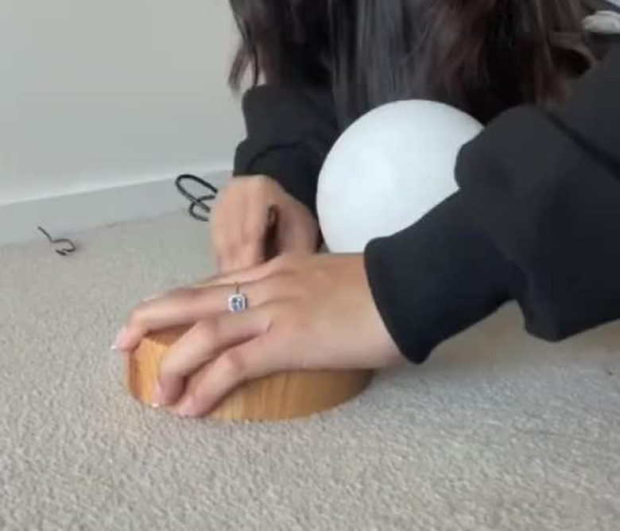
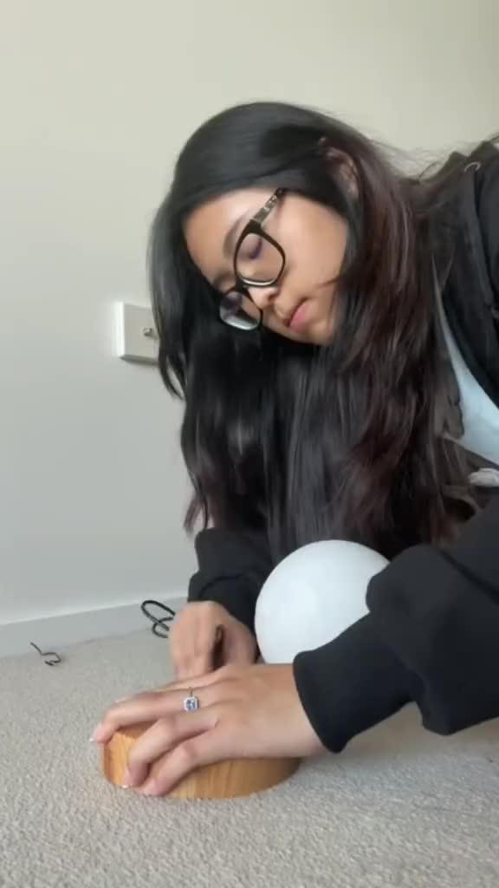

Lampe Lune en Lévitation Magnétique — Cabinet de Curiosités
- Lune 3D en lévitation magnétique — aucun support visible
- Rotation 360° automatique et silencieuse
- 16 couleurs d'éclairage + télécommande incluse
- 🔒 Paiement sécurisé PayPal ou carte bancaire — aucun compte requis
- ✔ Satisfait ou remboursé 30 jours
- ✔ Livraison suivie — numéro fourni à l'expédition
Le Storm Glass de Fitzroy arrive bientôt
Il complètera parfaitement la Lune en Lévitation sur ton bureau. Inscris-toi à la newsletter pour être informé(e) de sa sortie.
L'histoire derrière l'objet
Depuis les astronomes de Babylone jusqu'à Galilée qui pointa sa lunette vers le ciel en 1609, la Lune a toujours fasciné l'humanité. Premier objet céleste cartographié, elle rythmait les calendriers, guidait les marins et nourrissait les mythes de toutes les civilisations.
Cette lampe lune en lévitation magnétique s'inscrit dans cette fascination tout en la projetant dans le présent. La surface lunaire — fidèlement reproduite en relief 3D d'après les relevés des sondes spatiales — flotte désormais en apesanteur sur votre bureau, propulsée par un champ électromagnétique invisible. La physique du XIXᵉ siècle (l'électromagnétisme de Faraday) au service d'un objet du XXIᵉ.
C'est l'objet que les abonnés d'Échos du Passé reconnaissent immédiatement : l'histoire n'est pas seulement dans les livres, elle est dans les objets qu'on pose sur sa table. Et celui-ci raconte des millénaires de contemplation du ciel en un seul regard.
C'est le type de cadeau dont on parle encore 10 ans après — pas parce qu'il coûte cher, mais parce qu'il intrigue, fascine, et dit quelque chose sur la personne qui l'offre.
Comment fonctionne la lampe lune en lévitation magnétique ?
Le principe est simple : un électroaimant intégré au socle en bois génère un champ magnétique stable qui maintient la sphère lunaire en suspension à 1-2 cm au-dessus de la base, sans aucun câble ni support visible. La lune tourne alors automatiquement à 360°, en silence, tout en diffusant 16 couleurs d'éclairage réglables à la télécommande. Posée sur un bureau, une table de chevet ou une étagère, cette lampe lune en lévitation devient vite l'objet déco dont on parle — et une idée cadeau originale pour un anniversaire, une crémaillère ou simplement pour faire plaisir.
Questions fréquentes
Acheter en toute confiance
Nouveauté dans notre cabinet — soyez parmi les premiers à l'adopter.
Complétez votre cabinet
Trois objets scientifiques à histoire qui se marient parfaitement avec la Lune en Lévitation.
Storm Glass de Fitzroy
L'amiral Fitzroy l'utilisait à bord du HMS Beagle — le même navire que Darwin. Ces cristaux qui se forment et se dissolvent fascinent encore aujourd'hui.
Boule de Cristal 3D Galaxie
Une nébuleuse emprisonnée dans une sphère de verre par gravure laser 3D. L'univers de Galilée à Hubble, posé sur ton bureau.
Thermomètre de Galilée
Galileo Galilei a découvert ce principe en 1592. Des ampoules de verre colorées flottent ou coulent selon la température — la physique la plus élégante qui soit.
Reste informé(e) des nouveautés du Cabinet
Inscris-toi à la newsletter pour découvrir les nouvelles pièces du Cabinet avant tout le monde. En attendant, explore l'Histoire sur notre chaîne.
Merci ! Tu es inscrit(e) à la newsletter du Cabinet. À très vite !
Envie d'Histoire en attendant ? Abonne-toi à Échos du Passé ↗